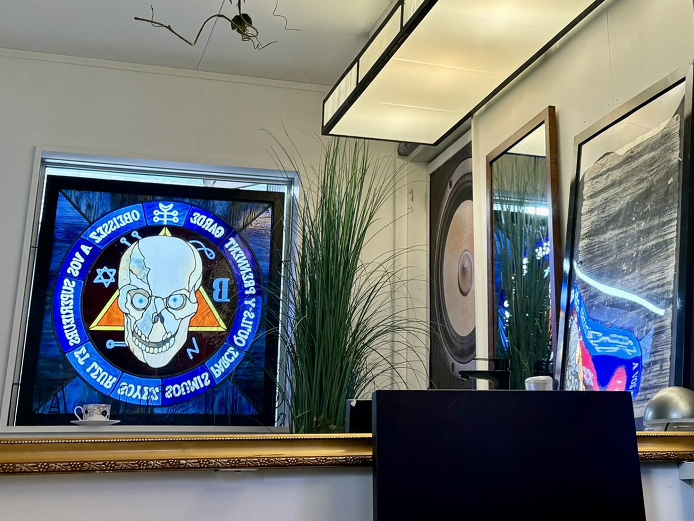

Since 1971
名古屋ディスコの 起源から紐解く 文化の出会い
※本調査は個人の思想を主張するものではなく、史実に基づいた文化継承の記録を目的としています。

Since 1971
名古屋ディスコの 起源から紐解く 文化の出会い
※本調査は個人の思想を主張するものではなく、史実に基づいた文化継承の記録を目的としています。

一般的に、現在でも聞くSFや電子音的音楽と呼ばれるようなサブカルチャーが、大衆に広く伝わっていったきっかけとなったのは、ディスコといわれています。
ディスコを「ナイトクラブ」とも呼ぶことがありますが、クラブはレンタルスペースという定義があるのに対し、ディスコは酒やDJを「雇う、用意する」という定義がありました。
とりわけ、ディスコは、HIP-HOPやJazzなどアンダーグラウンドな音楽を生んだと言われています。
日本のサブカルチャーと言われるような分野においても、まだそこまでネットが普及していなかった時代から、大学SF研究会や社会人系コミュニティなど、名古屋SFファンコミュニティが盛んに行われていました。
名古屋の音楽シーンでも同様に、人と人との繋がりが強く、ブームが去ってもやり続ける土地柄なため、アンダーグラウンドな音楽シーンが根強く残り、今でも新しい音楽を生んでいると言われています。
logic・freedomと名前変更される前にあった喫茶。
文化教会名古屋司教座聖堂布池カトリック教会・聖ヨハネ神学院・布池文化センター事務局付近の錦通沿い。
東区添地町17番地(現錦通葵二丁目交差点付近)。
テレビ塔歩行者用道路、袋町通へ歩いてまっすぐ行った大通り、伝馬町通沿いのビル街。
当時まだ栄は今のような都市として栄えていなかったそうです。
中区錦町3-14-10ミタカビル。
昔昭和46年、西暦1971年に、とある夫婦が営む「喫茶白鳩」が新栄の東区添地町(現葵町)にありました。
その後2年ぐらい経った後で、栄へ移転。
昔はハーフの子どもは、大人になると仕事に恵まれていませんでした。
神奈川県にある「エリザベス・サンダース・ホーム」という乳児院は駐留軍兵士と日本人女性との間に生まれた混血孤児たちを受け入れていましたが、名古屋にもこの孤児院出身の男の子がいて仕事に困っていたのです。
ママが男の子達を連れてきて、パパはお店の準備をし、この子達の働ける場所として、73年に「logic」「freedom」と名前を変え、中区錦町3-14-10ミタカビルへ移転しました。
ミタカビルは、ビル内で行き来できる回遊式の大きさで、2Fでパパがソウルミュージックカフェ「freedom」を、1Fでママがディスコ「logic」を営んでいました。
「freedom」は、昼間は明るいカフェで静かなjazzが流れ、夜は暗く踊るようなソウルミュージックが流れる、昼と夜で雰囲気が一転する日本人スタッフもいる店でした。
「logic」は、アフリカ系アメリカ人やフィリピン人などがいて、スタッフが外国人で皆ダンスが上手いということで話題を生み、ディスコは、名古屋ではまだ珍しかったため、名古屋最初のディスコと呼ばれ広がっていきました。
ウェイターやバーテンダーとしてアフロヘアーのハーフの若い男の子がいるとかっこいいからと女性客が多かったそうです。
飲食は、ご飯やカフェが、メインでテーブルよりも箱状、舞台にアフリカ系日本人が踊っていて、前でお客さんが真似して踊っていたそうです。
優生学は、ダーウィンの進化論の誤解から生まれたと言われています。
この優生学の誕生を受けて、ナチスドイツや日本は、「望ましくない形質または遺伝的欠陥を伝達しそうな人びとの生殖を規制しよう」という考えを政治に取り入れました。
政府は、公娼廃止よりも、レイプ犯罪が横行する占領軍対策を重視して、一般女性や子どもを性暴力から守り、かつ女性を人身売買するという遊廓の習わしを続けようと、アジア太平洋戦争敗戦直後、占領軍用に特殊慰安施設協会を設立しました。
日本政府に対してGHQは、この公娼制度を廃止する要求を1946年1月に出していますが、3月1日にはこの公娼廃止により転向せざるを得なくなった業者や娼妓のため、従来の遊里、遊廓17ヵ所に「特殊喫茶店」俗語「赤線」が暫定的に認められ、名前を変えて営業していたのです。
1948年7月、優生思想・優生政策上の見地から、不良な子孫の出生を防止することと母体保護を目的として、優生保護法が制定されました。
この優生保護法が生まれた背景には、富国強兵政策のもと、家庭に縛り付けられ家事と生殖の担い手として役割を負わされ、社会的な発言権を奪われてきた女性を解放するための段階として、「中絶の合法化」に乗り出したことにあります。
しかし、人工妊娠中絶が恒常化されていった結果、朝鮮戦争で売春慣行が隆盛、圧倒的権力関係下でのアメリカ兵と日本女性とのいびつな恋愛関係が数多く生まれ、他方、アメリカ兵によるレイプ犯罪が多発化したのです。
アフリカ系アメリカ人やフィリピンなど、多国籍間の課題となっていました。
また、一般人に対する啓蒙として、「基地周辺の女性に対しては、軽率な交際によって混血児を生むことのないよう啓蒙に努めることが大切」と、隔離する形で優生思想を強く主張しました。
親のいなくなった子どもを当時の人々は「戦争孤児」と呼んでいました。
人種、民族などが異なる両親のあいだに生まれた子は「混血児」と、親から捨てられた混血児は「混血孤児」と呼ばれていました。
混血児の誕生は、強姦によって生まれた場合、売春による場合、現地妻(オンリー)の子として生まれた場合などに大別できるとされています。
占領統治を担っていたGHQは12万人を超える戦争孤児に対しては、全国で保護施設を作るよう指示しました。
一方、混血孤児とよばれた子どもについては、占領政策へのイメージの悪化を懸念し、積極的に対策に乗り出すことはありませんでした。
戦時名古屋空襲の特徴は、爆弾の投下量が大きく、人口に対する死亡者の割合が大きかったことにあります。
1949年以降のドッジプランで大幅に縮小していくなか、ファシズムの時代の思想を臆面なく発揮する戦災復興都市計画が、唯一名古屋で成就されました。
岐阜基地は日本に現存するもっとも古い軍用飛行場で、航空兵器開発の拠点であり、50年に始まる朝鮮戦争では小牧飛行場が米空軍の重要拠点ともなっていました。
特殊慰安に関しても、名古屋に国際高級享楽ナゴヤクラブが開設され、ダンサー、女給、案内人の募集に、9月14日から17日の4日間で680名の女性が殺到していました。
東京の芸者くずれや松竹の女優くずれを専門に引っ張ってきてモダンセンスで売り、またその一方で京都島原の太夫に花魁風俗をさせて人気を取ったりと、全国から精鋭を集めて名古屋随一の繁栄を築いたと言われています。
杉栄町のほか水切町・生駒町にかけて所在し、156業者、約560人が従業員として働き、愛知県内では最大の規模を誇った中村遊廓として知られる名楽園に次ぐ規模の特殊飲食店がひしめきあっていました。
個人の文化的特徴は多様であり、また変化し続けてもいます。
どの文化であれどの民族であれ、野蛮にもなりうるし、文明化もされうるのです。
友と敵だけに人間を分類する見方は、結果的に、あらゆる悪に責任がある者と見なしてしまうことにつながります。
また、恐怖は、しばしば「非人間的」と形容されるような数々の振る舞いの主要な正当化の理由となることさえありえるのです。
野蛮から文明へと発展するためには、自分たちと他者が同じ人類に属すことを認め、他者に対してのみでなく、自分に対しても批判的判断ができるようになることが必要です。
そのためには、あらかじめ諸文化の複数性を認めているのでなければなりません。
自らの文化に対して距離を取れるようになるのは、自らが属する伝統を批判的眼差しで検討することによってであり、またその伝統を他の文化の伝統と突き合わせることによってなのです。
{kind=link}
{kind=link}
{kind=link}
{kind=link}
{kind=link}